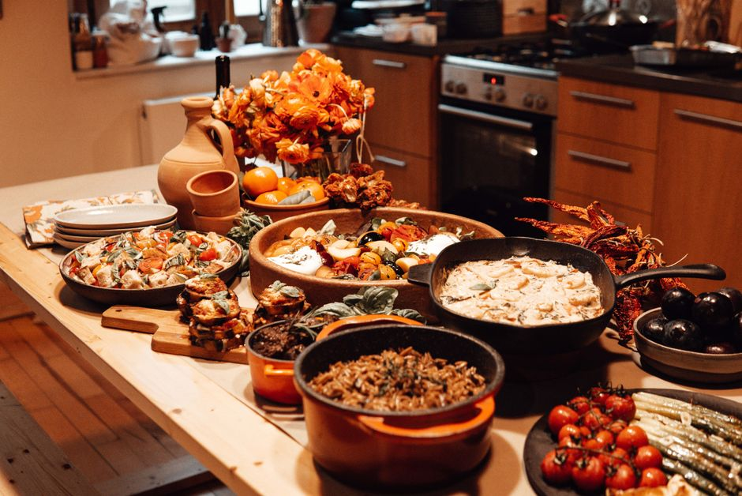

Easy Ways to Transform Leftovers into Economical Meals for Students

Photo: furkanfdemir / Pexels
Used well, leftovers save money and time. To avoid getting bored, transform them instead of reheating them as they are. To avoid food poisoning, follow a few basic storage rules.
Safety rules
- Refrigerate leftovers within two hours of cooking, in clean, shallow containers so they cool quickly.
- Keep them in the refrigerator at 4 °C (40 °F) or colder and eat them within two to three days. After that, freeze them.
- Cooked rice and pasta should not sit at room temperature. Chill them promptly.
- Reheat until the food is steaming hot all the way through (74 °C, 165 °F), and reheat only once.
- If you are unsure about smell, appearance or how long food has been stored, throw it out.
Ways to transform leftovers
- Cooked rice: fried rice with vegetables and a well-cooked egg, rice cakes, a baked casserole.
- Cooked vegetables: soup, omelet or frittata, a pasta topping.
- Cooked chicken or meat: wraps, sandwiches, salad, pasta sauce.
- Cooked pasta: baked pasta, cold pasta salad, a stir-fry with vegetables.
- Stale bread: French toast, croutons, breadcrumbs.
- Overripe fruit: stewed fruit, smoothies, muffins.
Change the flavor
The same leftover feels new with a different spice, sauce or fresh vegetable. Leftover chicken can be a curry one night and a salad the next.
Stay organized
Write the date on the container and put the oldest in front. If you cook for several days, freeze part of the portions right away.
Thaw safely
Thaw in the refrigerator, in the microwave, or in cold water if you will cook right away, but never on the counter for hours.
Good organization and these simple rules let you save money safely.
As an Amazon Associate, I earn from qualifying purchases.